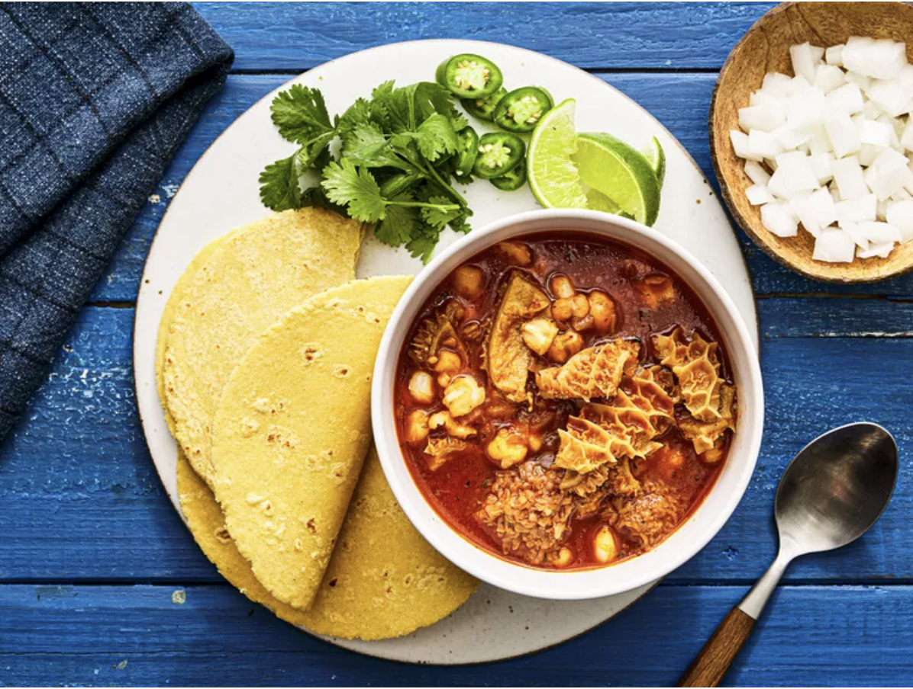

Menudo

Description
Menudo is an authentic mexican dish. Menudo is a popular “caldo”, or soup, in Mexico that includes as a main component beef tripe. If you don’t know what that is, it is the meat from a cow’s stomach.
Ingredients
- 2 Pounds of Rumba Meats Honeycomb Tripe
- 1 Liter of Water
- ½ White Onion
- 1 head of garlic
- 1 Branch of Fresh Oregano
- 1 Branch of Fresh Rosemary
- Salt
- Guajillo Sauce
- 1 Can of Beef Stock
- 1 Can of Hominy
- 2 Potatoes
Steps
- lean the Tripe with water and vinegar, and then rinse.
- Trim the fat around the edges of the tripe.
- Cut the Tripe into small chunks and add it to a pot with boiling water and cook for about 25 minutes.
- Drain the water and rinse the Tripe again. Set aside.
- In a large, clean pot add a liter of water, the garlic, onion, salt, fresh herbs, beef stock, potatoes, and tripe.
- Bring to a boil and let cook for 20 minutes.
- Make the guajillo sauce by removing the seeds and stem from the pasilla and guajillo peppers, and boiling them for 15 minutes in water. Drain the water and blend the softened peppers with one clove of garlic, salt, pepper, onion, and cumin. Strain the mixture with a strainer.
- Add the guajillo sauce and the hominy to the pot with the rest of the ingredients and let cook for an additional 10 minutes.
- Serve with lime, onion, and cilantro.